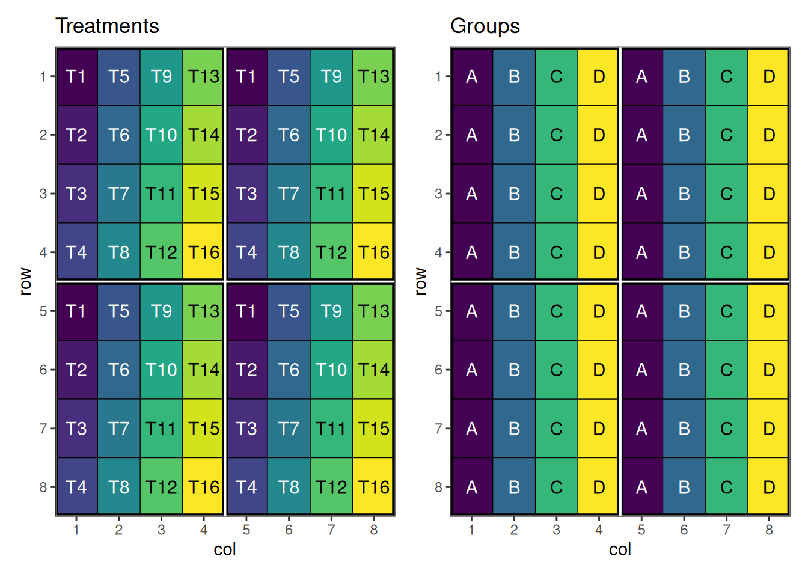
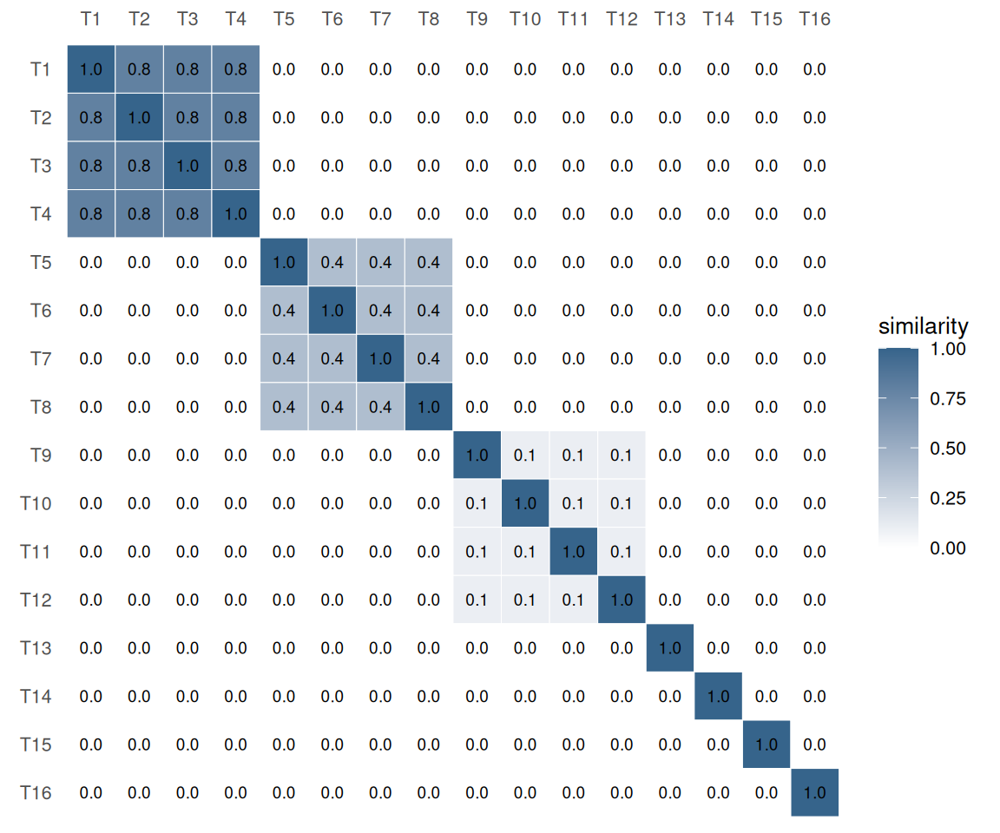
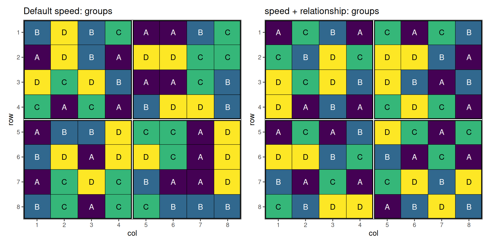
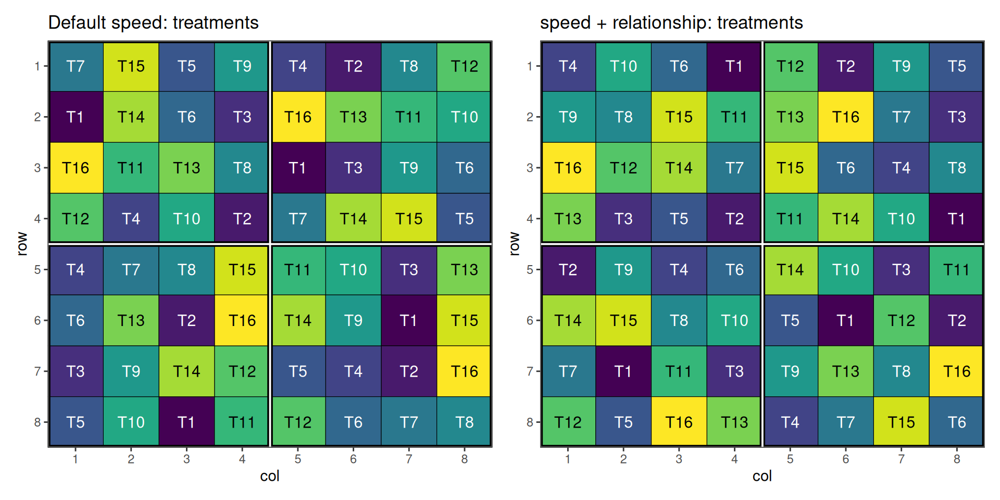
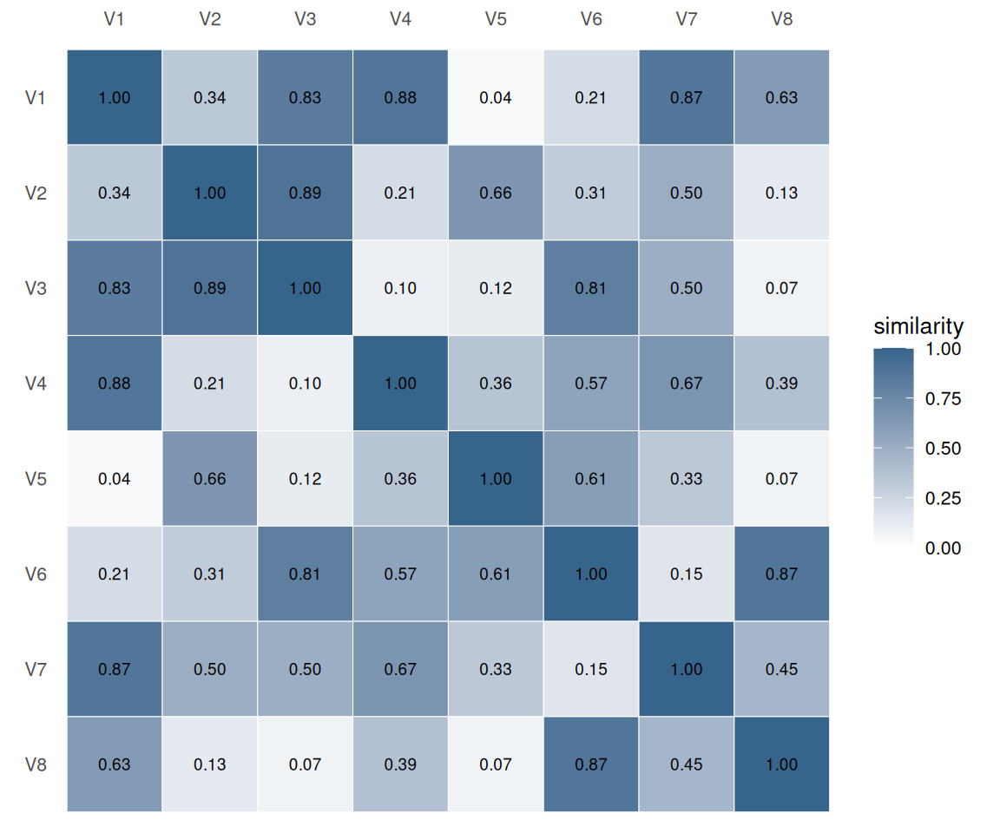
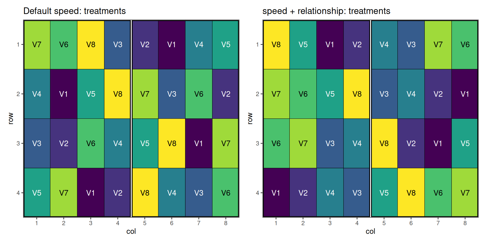
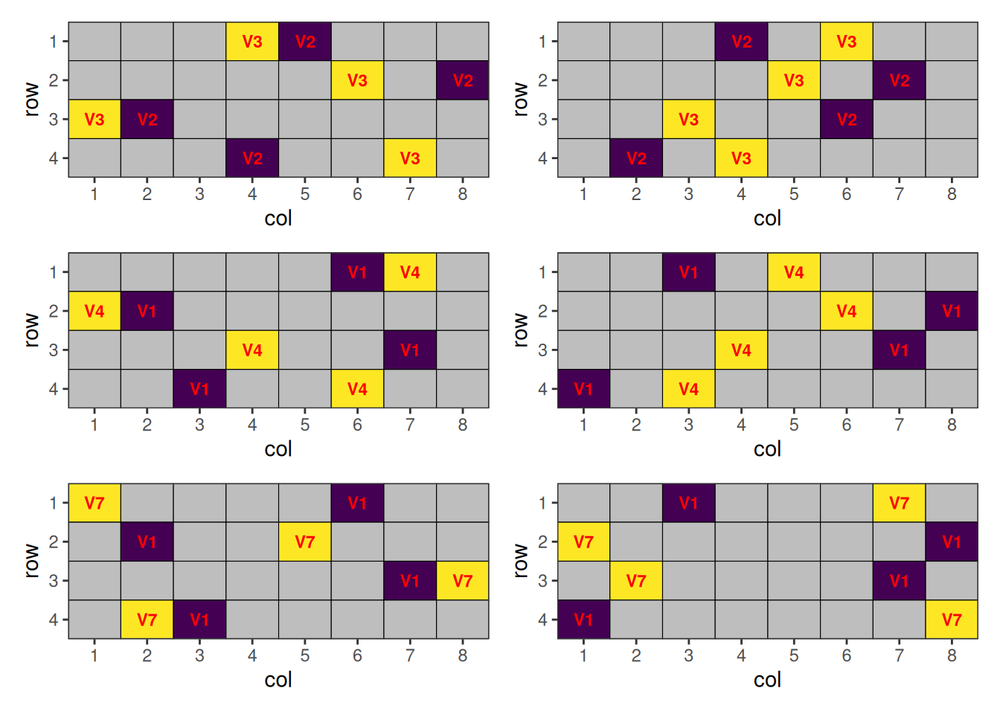

Design with Relationship Matrix
Overview
The default speed adjacency score asks “are these two cells the same treatment?”. Pairs that match contribute 1; pairs that differ contribute 0. Sometimes that’s too coarse: two distinct treatments may still be “close” to each other, and placing them next to each other carries some of the cost of a true repeat.
The relationship argument lets the simulated-annealing loop look up a graded similarity from a user-supplied matrix instead of hard-coding 1 for matches and 0 for non-matches. This vignette walks through a blocked design with sixteen treatments split into four groups whose within-group relatedness varies from “tightly related” to “unrelated”.
When to Use
- Trials where treatments fall into clusters of close relatives - for example plant-breeding lines that share parents (encoded via a pedigree A-matrix or marker-based G-matrix), variety entries from the same maturity group, or scaled mixtures of a base formulation
- Anywhere “minimise neighbours of the same kind” is too coarse and you would rather “minimise neighbours of related kind”
Grouped Treatments
Setting Up the Design
Sixteen treatments T01–T16 are organised into four groups of four:
| Group | Treatments | Within-group similarity |
|---|---|---|
A |
T01–T04 |
0.8 (tightly related) |
B |
T05–T08 |
0.4 (moderate) |
C |
T09–T12 |
0.1 (loose) |
D |
T13–T16 |
0.0 (unrelated) |
The trial uses an 8 × 8 grid divided into four 4 × 4 blocks.
items <- paste0("T", 1:16)
groups <- setNames(rep(c("A", "B", "C", "D"), each = 4), items)
design_df <- initialise_design_df(
items = rep(items, 4),
nrows = 8,
ncols = 8,
block_nrows = 4,
block_ncols = 4
)
design_df$group <- groups[design_df$treatment]
head(design_df) row col treatment row_block col_block block group
1 1 1 T1 1 1 1 A
2 2 1 T2 1 1 1 A
3 3 1 T3 1 1 1 A
4 4 1 T4 1 1 1 A
5 5 1 T1 2 1 2 A
6 6 1 T2 2 1 2 APlotting these factors shows the initial layout of the treatments and their group.
Code

Building the Relationship Matrix
The relationship matrix is a numeric matrix with rownames and colnames covering every value of the swap column. Each entry is the contribution of having that pair adjacent. The diagonal is typically 1 (self-pair = identity). Off-diagonal entries are usually in [0, 1]; here we encode four within-group levels and zero between-group similarity.
Code
rel_long <- as.data.frame.table(rel, responseName = "value")
names(rel_long)[1:2] <- c("row", "col")
ggplot2::ggplot(rel_long, ggplot2::aes(x = col, y = row, fill = value)) +
ggplot2::geom_tile(colour = "white") +
ggplot2::geom_text(
ggplot2::aes(label = sprintf("%.1f", value)),
size = 2.5
) +
ggplot2::scale_x_discrete(position = "top") +
ggplot2::scale_y_discrete(limits = rev(rownames(rel))) +
ggplot2::scale_fill_gradient(
low = "white", high = "steelblue4", limits = c(0, 1),
name = "similarity"
) +
ggplot2::coord_equal() +
ggplot2::labs(x = NULL, y = NULL) +
ggplot2::theme_minimal(base_size = 10) +
ggplot2::theme(panel.grid = ggplot2::element_blank())
1); each 4 × 4 block on the diagonal corresponds to a group, with brightness encoding within-group similarity.
Running the Optimisation
We run speed() twice with the same seed: first using the default identity-only adjacency, then with the relationship matrix (relationship = rel).
default_result <- speed(
design_df,
swap = "treatment",
swap_within = "block",
seed = 42,
quiet = TRUE
)
related_result <- speed(
design_df,
swap = "treatment",
swap_within = "block",
relationship = rel,
seed = 42,
quiet = TRUE
)
default_resultOptimised Experimental Design
----------------------------
Score: 4.266667
Iterations Run: 2872
Stopped Early: TRUE
Treatments: T1, T2, T3, T4, T5, T6, T7, T8, T9, T10, T11, T12, T13, T14, T15, T16
Seed: 42
related_resultOptimised Experimental Design
----------------------------
Score: 4.266667
Iterations Run: 3511
Stopped Early: TRUE
Treatments: T1, T2, T3, T4, T5, T6, T7, T8, T9, T10, T11, T12, T13, T14, T15, T16
Seed: 42 Visualising the Output
Code
default_result$design_df$group <- groups[default_result$design_df$treatment]
related_result$design_df$group <- groups[related_result$design_df$treatment]
p_def_g <- autoplot(default_result, treatments = "group") +
ggplot2::labs(title = "Default speed: groups")
p_rel_g <- autoplot(related_result, treatments = "group") +
ggplot2::labs(title = "speed + relationship: groups")
p_def_g + p_rel_g + plot_layout(ncol = 2)
Code
p_def_t <- autoplot(default_result, treatments = "treatment") +
ggplot2::labs(title = "Default speed: treatments")
p_rel_t <- autoplot(related_result, treatments = "treatment") +
ggplot2::labs(title = "speed + relationship: treatments")
p_def_t + p_rel_t + plot_layout(ncol = 2)
The default optimisation only avoids same-treatment adjacency; related treatments from the same group are still free to sit next to each other. The relationship-aware optimisation pushes whole groups apart, with the strongest pressure on group A (within-similarity 0.8) and no pressure at all on group D (0.0).
Per-Pair Similarities
Setting Up the Design
Eight varieties V01–V08 are evaluated on a 4 × 8 grid divided into two 4 × 4 blocks, with two replicates of every variety per block. Unlike the previous example, there is no group structure - every pair of varieties carries its own similarity coefficient.
items2 <- paste0("V", 1:8)
design_df2 <- initialise_design_df(
items = rep(items2, 4),
nrows = 4,
ncols = 8,
block_nrows = 4,
block_ncols = 4
)
head(design_df2) row col treatment row_block col_block block
1 1 1 V1 1 1 1
2 2 1 V2 1 1 1
3 3 1 V3 1 1 1
4 4 1 V4 1 1 1
5 1 2 V5 1 1 1
6 2 2 V6 1 1 1Building the Relationship Matrix
We populate the upper triangle with random similarities in [0, 0.9], mirror it for symmetry, and pin the diagonal to 1. The result is a relationship matrix in which every off-diagonal entry is distinct - there is no plateau for the optimiser to exploit, so each pair contributes its own adjacency cost.
Code
rel2_long <- as.data.frame.table(rel2, responseName = "value")
names(rel2_long)[1:2] <- c("row", "col")
ggplot2::ggplot(rel2_long, ggplot2::aes(x = col, y = row, fill = value)) +
ggplot2::geom_tile(colour = "white") +
ggplot2::geom_text(
ggplot2::aes(label = sprintf("%.2f", value)),
size = 2.5
) +
ggplot2::scale_x_discrete(position = "top") +
ggplot2::scale_y_discrete(limits = rev(rownames(rel2))) +
ggplot2::scale_fill_gradient(
low = "white", high = "steelblue4", limits = c(0, 1),
name = "similarity"
) +
ggplot2::coord_equal() +
ggplot2::labs(x = NULL, y = NULL) +
ggplot2::theme_minimal(base_size = 10) +
ggplot2::theme(panel.grid = ggplot2::element_blank())
1.
Running the Optimisation
We run speed() twice with the same seed: first using the default identity-only adjacency, then with the per-pair relationship matrix (relationship = rel2) and a stronger balance weight set through optim_params().
default_result2 <- speed(
design_df2,
swap = "treatment",
swap_within = "block",
seed = 112,
quiet = TRUE
)
related_result2 <- speed(
design_df2,
swap = "treatment",
swap_within = "block",
relationship = rel2,
optimise_params = optim_params(bal_weight = 2),
seed = 112,
quiet = TRUE
)
default_result2Optimised Experimental Design
----------------------------
Score: 2.285714
Iterations Run: 2758
Stopped Early: TRUE
Treatments: V1, V2, V3, V4, V5, V6, V7, V8
Seed: 112
related_result2Optimised Experimental Design
----------------------------
Score: 16.30073
Iterations Run: 3435
Stopped Early: TRUE
Treatments: V1, V2, V3, V4, V5, V6, V7, V8
Seed: 112 Visualising the Output
Code
p_def_t2 <- autoplot(default_result2, treatments = "treatment") +
ggplot2::labs(title = "Default speed: treatments")
p_rel_t2 <- autoplot(related_result2, treatments = "treatment") +
ggplot2::labs(title = "speed + relationship: treatments")
p_def_t2 + p_rel_t2 + plot_layout(ncol = 2)
The default optimisation treats every non-self adjacency as equally costly. With a relationship matrix, the algorithm can separate the similar varieties - neighbours of any given variety tend to be the varieties with the smallest entries in its row of rel2.
The placements of the closely related pairs of treatments:
Code
# Plot a layout where cells with NA treatments are greyed and the rest
# are labelled in red.
plot_highlighted_layout <- function(layout_df) {
x_breaks <- 1:max(layout_df$col)
y_breaks <- 1:max(layout_df$row)
ggplot2::ggplot(layout_df, ggplot2::aes(col, row, fill = treatment)) +
ggplot2::geom_tile(color = "black") +
ggplot2::scale_fill_viridis_d(na.value = "grey") +
ggplot2::scale_x_continuous(expand = c(0, 0), breaks = x_breaks) +
ggplot2::scale_y_continuous(expand = c(0, 0), breaks = y_breaks, trans = scales::reverse_trans()) +
ggplot2::geom_text(
ggplot2::aes(label = treatment),
size = 3,
color = "red",
na.rm = TRUE,
fontface = "bold"
) +
ggplot2::theme_bw() +
ggplot2::theme(
panel.grid.major = ggplot2::element_blank(),
panel.grid.minor = ggplot2::element_blank(),
legend.position = "none"
)
}
ut <- which(upper.tri(rel2), arr.ind = TRUE)
top_orders <- order(rel2[upper.tri(rel2)], decreasing = TRUE)
plots <- NULL
for (i in 1:3) {
top <- ut[top_orders[i], , drop = FALSE]
close_treatments <- unique(c(
rownames(rel2)[top[, "row"]],
colnames(rel2)[top[, "col"]]
))
df_def <- default_result2$design_df
df_def$treatment <- ifelse(df_def$treatment %in% close_treatments, as.character(df_def$treatment), NA)
df <- related_result2$design_df
df$treatment <- ifelse(df$treatment %in% close_treatments, as.character(df$treatment), NA)
hl_def <- plot_highlighted_layout(df_def)
hl_rel <- plot_highlighted_layout(df)
if (is.null(plots)) {
plots <- hl_def + hl_rel
} else {
plots <- plots + hl_def + hl_rel
}
}
plots + plot_layout(ncol = 2)
Without a relationship matrix, these related treatments can be placed next to each other. This can be optimised by providing such matrix.
Related Vignettes
- Common Agricultural Experimental Designs with speed - foundational designs and the default optimisation flow.
- Custom Objective Functions and Advanced Options for Optimisation in speed - for cases where weighted-relationship adjacency is one of several competing objectives.
- Multi-Environment Trials with speed - how the same workflow extends to hierarchical layouts.
This vignette demonstrates the relationship argument added to calculate_adjacency_score() and speed(). For other features of the package, consult the documentation and additional vignettes.